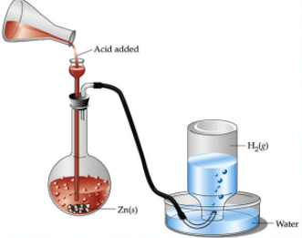
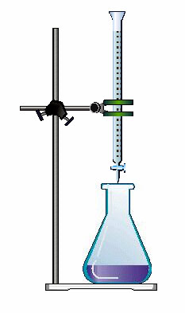

Curso
- Presentación del curso
Bienvenid@s al curso de Laboratorio de Química Inorgánica I, aquí encontrarán el contenido referente a los temas que veremos en las prácticas. Conforme nuestro avance se estará habilitando el nuevo contenido como algunos vídeos, tareas, cuestionarios y material de consulta.
¡Éxito en el trimestre 21-I y manos a la obra!
Grupo: CCB-81

Profesora titular:
Ma. en Edu. María de la Luz Soto Téllez mlst@azc.uam.mx
Ayudante:
Ing. Amb. Guadalupe Belén Hernández Tavera
al2153033859@azc.uam.mx gbht@azc.uam.mx
- Inducción al curso
- Práctica 1
Obtención del hidrógeno y algunas de sus propiedades físicas y químicas

- Práctica 2
- Práctica 3
- Práctica 4
Titulaciones por reacciones de neutralización ácido-base

- Práctica 5

- Práctica 6
- Práctica 7